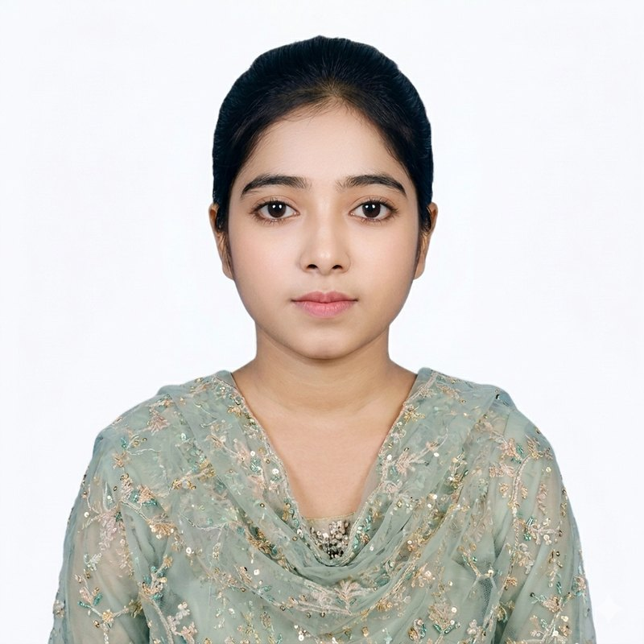

Open to entry-level opportunities
Morium Akter
BSS (Honours) Economics student, University of Dhaka
Skilled in
Analytical thinking, data processing and clear communication, backed by a consistent academic record and practical MS Office skills.
- Current CGPA
- 3.75
- HSC GPA
- 5.00
- Year of study
- Third

About
Driven and detail-oriented, and looking for a growth-oriented organization where I can contribute reliably to team goals.
My Economics training is complemented by practical skills in MS Word, Excel and PowerPoint, online research, interpersonal communication, teamwork and time management. I am seeking an entry-level position where I can apply my academic foundation and administrative competence.
Education
-
2022 to present
BSS (Honours) in Economics
Kabi Nazrul Government College, affiliated with University of Dhaka. Session 2022–2023, third year ongoing.
- CGPA 3.75
- 1st Year GPA 3.83
- 2nd Year GPA 3.67
-
2022
Higher Secondary Certificate, Humanities
Government Adamjeenagar M.W. College, Dhaka Board.
- GPA 5.00 / 5.00
-
2020
Secondary School Certificate, Humanities
Shampur Sheikh Mortoza Ali High School, Dhaka Board.
- GPA 4.89 / 5.00
-
2017
Junior School Certificate
Kaykarterk Nabab Habib Ulla High School, Dhaka Board.
- GPA 4.36 / 5.00
-
2014
Primary Education Completion
Al-Amin Bidyapith.
- GPA 4.58 / 5.00
Skills
Professional
Languages
- BanglaNative
- EnglishReading, writing and basic communication
Interests
Certifications
Verified certificates are hosted on Google Drive.
Basics of Accounting
UniAthena with Cambridge International Qualifications, UK. Level 7, scored 96/100.
View CertificateCyber Hygiene Training
The Asia Foundation and SAJIDA Foundation. Digital safety, online threat awareness and privacy practices.
View CertificatePrevention of Sexual Harassment
UniAthena with Cambridge International Qualifications, UK. Level 5, scored 84/100.
View CertificateLet's talk
For opportunities and professional enquiries, reach out by email or phone.
- Emailmoriyoma174@gmail.com
- Phone+880 1742-067828
- LocationHossainpur, Kishoreganj, Dhaka, Bangladesh